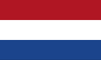
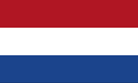
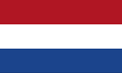
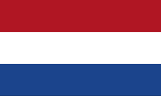

This is an AT Protocol Personal Data Server (aka, an atproto PDS)
Most API routes are under /xrpc/
Code: github.com/bluesky-social/atproto
Self-Host: github.com/bluesky-social/pds
Protocol: atproto.com
Aquest és un servidor de dades personals del protocol AT (també conegut com un PDS atproto)
La majoria de les rutes de l'API es troben a /xrpc/
Codi: github.com/bluesky-social/atproto
Autònom: github.com/bluesky-social/pds
Protocol: atproto.com
Ceci est un serveur de données personnelles du protocole AT (aussi connu en tant que PDS atproto)
La majorité des routes de l'API sont sous /xrpc/
Code: github.com/bluesky-social/atproto
Héberger chez-soi: github.com/bluesky-social/pds
Protocole: atproto.com
Dit is een AT Protocol Personal Data Server (ook wel een atproto PDS genoemd)
De meeste API-routes bevinden zich onder /xrpc/
Code: github.com/bluesky-social/atproto
Zelfhosting: github.com/bluesky-social/pds
Protocol: atproto.com